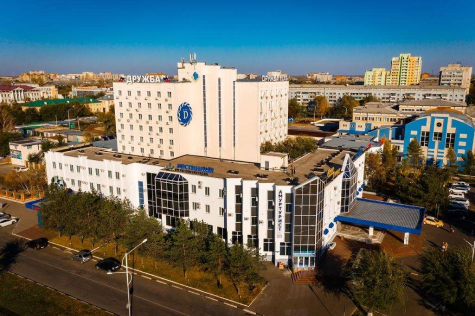

БЛАГОВЕЩЕНСК
Город на границе
DiscoveRussia
БЛАГОВЕЩЕНСК
Город на границе
Путь
Как добраться?

Из Иркутска в Благовещенск. Цена: от 13000 RUB. Из аэропорта “Игнатьево” в центр совершает рейсы автобус. Цена: 30 RUB.

Поездом из Иркутска в Благовещенск. Цена: от 6000 RUB. С ж/д вокзала на автобусе до центра. Цена: 30 RUB.

Вполне можно проехать 2618 км от Иркутска доБлаговещенска на авто. Путь займет приблизительно два дня с остановками. В стоимость входит: бензин, еда, мотель, платные участки дороги. Цена: от 22000 RUB.
Туризм
Что посетить?


Благовещенск — административный центр Амурской области, расположен в том месте, где полноводная река Зея впадает в не менее полноводный Амур. А ещё, уникальность этого города в том, что стоит он непосредственно на российско-китайской границе. Границей служит река Амур, и прямо напротив Благовещенска расположен китайский город Хэйхэ.

Парк Дружбы
Парк Дружбы — одно из самых ярких, зеленых и красивых общественных пространств Благовещенска, которое в народе называют «китайский городок». Павильоны в китайском стиле, красивые мостики, фонтан на воде, аттракционы для детей, катамараны, чистые аллеи для прогулок, лавочки для отдыха и спротивные площадки - всё это дополняет прекрасный водопад, возле которого можно посидеть в жаркий день.
Кафедральный собор Благовещения Пресвятой Богородицы
Кафедральный собор Благовещения Пресвятой Богородицы – это одна из культовых достопримечательностей города и всего Приамурья. Собор возведен на историческом, священном для местных жителей месте, где размещалось первое строение города - Свято-Никольская церковь. Собор венчают семь золочёных куполов, и еще один позолоченный купол - у колокольни.
Набережная
Набережная представляет собой хорошо укрепленный бетонный берег реки Амур высотой 9 метров. На ней находятся множество интересных мест: памятник Дружку, Золотая Миля, площадь и т.д. С неё открывается отличный вид на китайский город Хэйхэ.
Триумфальная арка
Триумфальная арка в Благовещенске в честь цесаревича Николая — самая высокая из четырех подобных арок на Дальнем Востоке. Место для каменных ворот выбрали историческое: именно здесь в 1858 году архиепископ Иннокентий встретил графа Николая Муравьева-Амурского, когда тот привез подписанный китайской стороной Айгунский договор, по которому современное Приамурье оставалось за Россией и граница между странами проходила по Амуру до Охотского моря.
Отели
Где остановиться переночевать?

Гостиница "Красная"
"Есть всё :магазины, кафе, столовая, кинотеатр." "Номер отличный все есть чайник, микроволновка, большая кровать)"
Цена: 2700 RUB.
"Отель у самой границы с видом на набережную реки и китайский город Хэйхэ." "Да и номер хороший все есть чайник холодильник телевизор кондиционер."
Цена: 3400 RUB.
Гостиница “Дружба”
“Славянская”
"Из окна номера прекрасный вид на площадь перед ЖД вокзалом." "В кафе на 1 этаже 4 варианта завтрака, которые входят в стоимость номера."
Цена: 3563 RUB.
Питание
Где остановиться перекусить?

Благовещенск поражает своей близостью к Китаю! Возможность увидеть жизнь китайского города Хэйхэ, находясь на территории России, вызывает интерес у туристов! Далее по курсу Владивосток. Отправляйтесь туда, чтобы насладиться величием архитектуры!
Путешествуй с DiscoveRussia